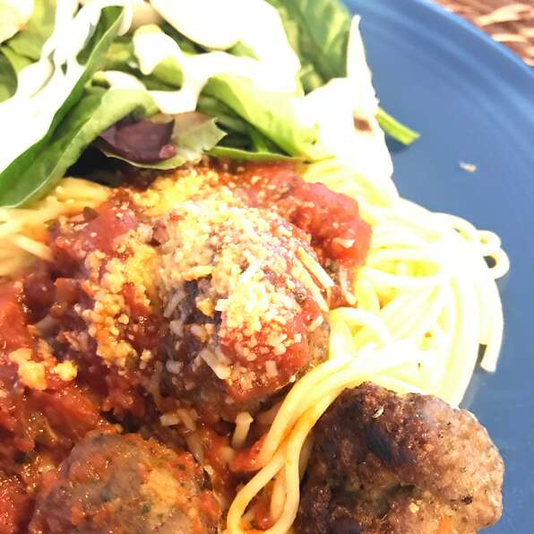

back
Turkey Meatballs

Description
These turkey meatballs are moist and flavorful. Pan fry, bake, or cook from raw right into your favorite spaghetti sauce, as I do!
Ingredients
- 1 pound ground turkey
- ½ cup Italian-style bread crumbs
- ½ cup grated Parmesan cheese
- 1 egg
- ¼ cup chopped fresh parsley
- ½ teaspoon kosher salt (Optional)
Steps
- Preheat oven to 375 degrees F (190 degrees C).
- Mix turkey, bread crumbs, Parmesan cheese, egg, parsley, and salt together in a large bowl. Form meat mixture with wet hands into balls about 1 1/2 inches in diameter without handling or packing too hard.
- Bake in the preheated oven until browned, about 20 minutes . An instant-read thermometer inserted into the center should read at least 160 degrees F (70 degrees C).